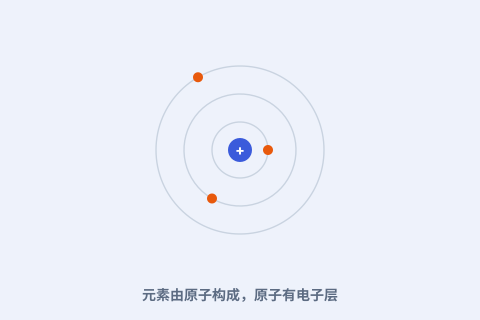

一、挂上每间实验室的墙
周期表是化学最通用的“地图”。无论是配平方程式还是猜反应，化学家都先瞄一眼它。

二、原子结构说清了“为什么”
20 世纪，人们发现元素按电子层排布，而电子层的重复正是周期的来源。门捷列夫的表，终于有了微观解释。
三、稀有气体补了一列
后来发现的稀有气体（氦、氖、氩…）单独成最右一列，完美契合周期律，进一步证明表的完备。
四、仍在生长
从 60 多种到今天 118 种人工合成元素，周期表不断加长，框架却始终稳。它已成为科学秩序的符号。
周期表是化学最通用的“地图”。无论是配平方程式还是猜反应，化学家都先瞄一眼它。

20 世纪，人们发现元素按电子层排布，而电子层的重复正是周期的来源。门捷列夫的表，终于有了微观解释。
后来发现的稀有气体（氦、氖、氩…）单独成最右一列，完美契合周期律，进一步证明表的完备。
从 60 多种到今天 118 种人工合成元素，周期表不断加长，框架却始终稳。它已成为科学秩序的符号。